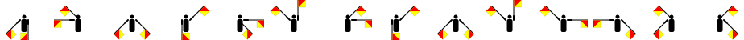

Key Changes
The choir director rejected this song for being too difficult: each key change was only performed correctly by a single member.
Key changes to perform:

2 7777 222 444 444
002 100 112 001 200 221
2 18 1 9 12 12 5
V XII V XIII V XIV XX XIX
![A square colored in alternating vertical stripes: yellow, blue, yellow, blue, yellow, blue. A square with a red upper right and yellow lower left. A square divided into 4 smaller squares; the upper left and bottom right are yellow, and the upper right and bottom left are black. A square with two thin yellow stripes at the top and bottom and a blue middle portion. A red shape that looks like a square with a triangular portion cut off of the right side (the point of the triangle faces left, and its two other vertices are the top right and bottom right corners of the square). A square divided into 4 smaller squares; the upper left and bottom right are red, and the upper right and bottom left are white. A square colored in alternating vertical stripes: yellow, blue, yellow, blue, yellow, blue.](../static/puzzle_resources/key-changes/2.png)
–– .– .–. .. – .. –– . ..–. .–.. .– ––. ...
Al P Ar K B Li P Be B
01110 00001 10100 01111
35 23 34 33 15 43 35 15 31 31 24 33 22
.63.8*
Papa Romeo India Sierra Oscar November Tango Alfa Papa Charlie Oscar Delta Echo
⠗⠕⠍⠁⠝⠝⠥⠍⠑⠗⠁⠇⠎
83 69 77 65 80 72 79 82 69
How to perform them:
Count the vowels in the names of the directions of the flags.
Delete any curves, then rotate 180°.
Fill in every dot that's a proper divisor of the number (using the standard numbering).
Hold flags in the positions of the digits, where 1=south, 2=southwest, ..., 8=southeast.
Let A, B, and C be the numbers of all lines, dots, and diagonal lines. Write A×B, A×C, and B×C.
Make the background yellow, then cut the image in half.
Multiply by two.
Replace each row as follows: ⚬•s becomes Is, •⚬s becomes Vs, ••s becomes Xs. Delete ⚬⚬s.
Replace the first two letters with L and make the rest lowercase.
Replace the middle digit with ., increment the last digit, then write the name of that MacOS.
Write 1 [first digit] times, then 0 [second digit] times, then 1 [third digit] times.
Write a dot for each straight line, then a dash for each curve.
Write the largest prime factor, but backwards.
Write the number of occurrences of the most frequent letter, then the number of distinct letters.
Write the number of yellow regions.